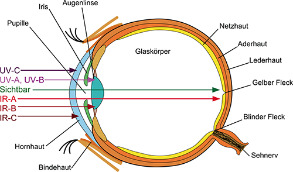
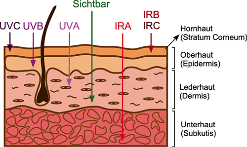

(1) Optische Strahlung dringt in menschliches Gewebe nur oberflächlich ein, die inneren Organe werden nicht erreicht. Deswegen ist die Wirkung optischer Strahlung auf die Augen und die Haut begrenzt. Hochenergetische Laser zur Materialbearbeitung können jedoch in kurzer Zeit die Haut und die darunterliegenden Gewebestrukturen durch Abtragung durchdringen. Die inkohärente Strahlung aus konventionellen optischen Strahlungsquellen und die kohärente Strahlung (Laserstrahlung) unterscheiden sich dabei grundsätzlich nicht in ihren Wirkungen. Art und Schwere einer Schädigung ist abhängig von der Bestrahlungsstärke (durch starke Bündelung der Laserstrahlung können hohe Bestrahlungsstärken erreicht werden), der Bestrahlungsdauer sowie der bestrahlten Fläche und den optischen Eigenschaften des Gewebes, hier vor allem von seinem Absorptionsvermögen. Die Absorption ist wiederum von der Wellenlänge abhängig, was mit den unterschiedlichen optischen Eigenschaften der Gewebebestandteile zusammenhängt. Während kurzwellige UV-Strahlung und langwellige IR-Strahlung bereits an der Oberfläche absorbiert werden, dringt Strahlung in den Spektralbereichen der sichtbaren Strahlung und der IR-A-Strahlung tiefer ein.
(2) Bei einer Bestrahlungsdauer im Minutenbereich sowie geringen Bestrahlungsstärken (< 50 mW • cm-2)1 können fotochemische Effekte im Gewebe ausgelöst werden. Bei diesen Effekten wird die Energie der einfallenden optischen Strahlung in chemische Reaktionsenergie umgesetzt. Fotochemische Effekte dominieren bei ausreichender Photonenenergie, d. h. vor allem bei optischer Strahlung im UV- und kurzwelligen sichtbaren Spektralbereich. Bestimmte biologische Moleküle absorbieren dabei die auftreffende Strahlung, werden dadurch angeregt und geben ihre Energie an Sauerstoff-Moleküle ab. Dadurch entsteht eine hochreaktive Form des Sauerstoffs (Singulett-Sauerstoff). Dieser greift das umliegende Gewebe an und erzeugt freie Radikale, die ebenfalls hochreaktiv sind und umgebende zelluläre Moleküle wie Proteine oder die Erbsubstanz Desoxyribonukleinsäure (DNS) schädigen können. Optische Strahlung im kurzwelligen UV-Spektralbereich hat sogar ausreichend Photonenenergie, um eine direkte Schädigung der DNS hervorzurufen, indem chemische Bindungen gespalten und dadurch Bausteine der DNS anders verknüpft werden. Derartige Schädigungen der DNS können krebserregend wirken. Des Weiteren können eine Reihe chemischer Verbindungen und Medikamente das biologische Gewebe für die fotochemische Wirkung von optischer Strahlung sensibilisieren. Dadurch können heftige biologische Reaktionen, sogenannte fototoxische Reaktionen, auftreten.
(3) Bei einer Bestrahlungsdauer von einigen Sekunden bis zu einigen Millisekunden und Bestrahlungsstärken oberhalb von 100 W • cm-2 sind thermische Effekte zu beobachten. Sie dominieren im langwelligen Teil des sichtbaren Spektrums und im IR-Spektralbereich: Die im Gewebe enthaltenen Moleküle führen verstärkt Schwingungen aus, was zur Erwärmung des Gewebes führt. Die entstehende Wärme wird auf das umliegende Gewebe übertragen. Aufgrund einer lokalen Temperaturüberhöhung können Schädigungen entstehen. Diese reichen von einer Veränderung der natürlichen Molekülstruktur (Denaturierung), über die Gerinnung von Eiweiß (Koagulation) und die Verdampfung (Vaporisation) des Wassers im Gewebe bis hin zur Verkohlung (Karbonisierung) des Gewebes.
(4) Es besteht ein prinzipieller Unterschied zwischen thermischen und fotochemischen Wirkungen: Bleibt bei thermischer Wirkung die Temperatur des Gewebes auch bei länger andauernder Absorption von Photonen unterhalb eines Schwellenwertes, so ist keine Schädigung zu befürchten. Andererseits kann bei fotochemischer Wirkung die Absorption bereits eines Photons zur Schädigung auf molekularer Ebene führen. Diese Schädigungen bzw. Veränderungen sind kumulativ.
(5) Bei weiter erhöhter Bestrahlungsstärke bis 1 GW • cm-2 und einer Verkürzung der Impulsdauer auf Mikro- bis Nanosekunden verdampft das Gewebe, es wird praktisch explosionsartig abgetragen (Fotoablation). Bei noch weiterer Verkürzung der Impulsdauer auf Werte im Nano- bis Pikosekundenbereich und gleichzeitiger Erhöhung der Bestrahlungsstärken auf 1 TW · cm-2 entsteht Plasma, d. h. freie Elektronen, Ionen und neutrale Atome bzw. Moleküle. Dieser Prozess wird von einer akustischen Stoßwelle begleitet, die sich ausbreitet und das Gewebe mechanisch zerstört. In diesem Fall spricht man von Fotodisruption.
(1) Das am meisten gefährdete Organ beim Umgang mit optischer Strahlung ist das Auge (Abbildung A3.1). Die Hornhaut (Cornea), die selbst etwa 75 % Wasser enthält, ist nach außen nur durch einen wenige Mikrometer dicken Film aus Tränenflüssigkeit gegen die Luft geschützt. An die Hornhaut schließt sich die vordere Augenkammer an, die mit Kammerwasser gefüllt ist. Vor der Augenlinse befindet sich kreisförmig die Regenbogenhaut (Iris). Die Öffnung der Regenbogenhaut wird Pupille genannt. Der Pupillendurchmesser ändert sich je nach Beleuchtungsstärke (gemeinhin als "Helligkeit" bezeichnet), und bestimmt damit, wie viel sichtbare und nahe infrarote optische Strahlung ins Auge eintreten kann. Der Pupillendurchmesser kann dabei von 1,5 mm bis ca. 8 mm variieren. Der Raum hinter der Iris bis zur Linse wird hintere Augenkammer genannt.
(2) Die Linse ist mit einer elastischen Kapsel und einem weichen Kern in der Lage, ihre Form und damit die Brechkraft zu ändern (Akkommodation). Zwischen der Linse und der Netzhaut (Retina) befindet sich der Glaskörper, der zu etwa 98 % aus Wasser sowie einem Netz von Kollagenfasern besteht und eine gallertartige Struktur hat.
(3) Optische Strahlung im sichtbaren Spektralbereich dient im Wesentlichen dem Sehen. Das ins Auge treffende Licht gelangt durch die Hornhaut, die Linse und den Glaskörper auf die Netzhaut und wird dort von als Fotorezeptoren spezialisierten Sinneszellen - den Zapfen und den Stäbchen - aufgenommen. Die dadurch erzeugten Signale werden über den Sehnerv an das Gehirn weitergeleitet und dort als Sinneseindruck verarbeitet. Als "Gelber Fleck" (Macula lutea) wird der Bereich der Netzhaut mit der größten Dichte von Fotorezeptoren bezeichnet. Er befindet sich in der Mitte der Netzhaut und hat einen Durchmesser von etwa 5 mm. Die Fotorezeptoren im "Gelben Fleck" sind hauptsächlich die für die Farbwahrnehmung verantwortlichen Zapfen. Die Netzhautgrube (Fovea centralis) ist der zentrale Teil des "Gelben Flecks" mit einem Durchmesser von ca. 1,5 mm. Sie ist die Stelle des schärfsten Sehens. An der Einmündung des Sehnervs und der Blutgefäße in die Netzhaut befinden sich weder Zapfen noch Stäbchen, sodass ein Sehen dort nicht möglich ist. Diese Stelle heißt deshalb "Blinder Fleck". Hinter der Fotorezeptorenschicht folgen das Pigmentepithel und die Aderhaut, die die Netzhaut mit Blut versorgt und auf der Lederhaut aufliegt. Die optische Strahlungsenergie wird überwiegend durch Melanin in einer sehr dünnen Schicht des Pigmentepithels absorbiert.

(4) Durch den Linseneffekt des Auges wird die Bestrahlungsstärke auf dem Weg von der Hornhaut zur Netzhaut bis zu etwa 500 000-fach erhöht. Dies erklärt, warum bereits eine relativ geringe Bestrahlungsstärke auf der Hornhaut für die Netzhaut gefährlich sein kann. Schäden an der Netzhaut sind besonders schwerwiegend und können zu erheblichen Beeinträchtigungen des Sehvermögens führen. Kleinere Schädigungen der Netzhaut bleiben meist unbemerkt, soweit sie außerhalb des "Gelben Flecks" liegen. Größere geschädigte Stellen können jedoch zu Ausfällen im Gesichtsfeld führen. Bei einer Schädigung an der Stelle des schärfsten Sehens kann das Scharfsehen und das Farbsehvermögen stark verringert werden. Wird gar der "Blinde Fleck" getroffen, droht die völlige Erblindung. Im Hinblick auf eine potenzielle Netzhautschädigung muss besonders berücksichtigt werden, dass auch optische Strahlung im IR-A-Spektralbereich bis 1 400 nm auf die Netzhaut fokussiert wird. Obwohl sie nicht wahrgenommen werden kann, weil die Netzhaut für diese Wellenlängen keine Fotorezeptoren besitzt, kann sie dort Schädigungen hervorrufen. Eine Netzhautschädigung ist irreversibel.
(5) Eine thermische Netzhautschädigung entsteht immer dann, wenn in dem retinalen Pigmentepithel durch die absorbierte optische Strahlung eine Temperaturerhöhung von 10 °C - 20 °C erreicht wird. Dieser Mechanismus der Netzhautschädigung ist bei kurzer Bestrahlungsdauer (weniger als 10 s) dominant, und die Netzhautschädigung ist normalerweise sofort bemerkbar. Dagegen ist die fotochemische Netzhautschädigung (Fotoretinopathie) bei längerer Bestrahlungsdauer (über 10 s) dominant. Eine bemerkbare Schädigung verzögert sich hier um mehr als zwölf Stunden und äußert sich in einer Entpigmentierung.
(6) Da die UV-Strahlung und die Strahlung im fernen IR-Bereich (IR-B und IR-C) von der Hornhaut, der Bindehaut und der Linse absorbiert werden, sind diese Teile des Auges gefährdet. Durch UV-Strahlung können fotochemische Reaktionen ausgelöst werden, die zu sehr schmerzhaften Entzündungen der Hornhaut (Fotokeratitis) und/oder der Bindehaut (Fotokonjunktivitis) führen. Dabei werden die äußeren Zellen der Hornhaut und der Bindehaut zerstört. Die Schädigung macht sich vier bis zwölf Stunden nach der Ex-position durch starke Augenschmerzen bemerkbar. Weil in der Horn- und Bindehaut immer neue Epithelzellen nachgebildet werden, ist diese Schädigung reversibel. Die Heilung tritt normalerweise innerhalb weniger Tage ein. Zu dieser Schädigung kommt es z. B. beim Elektroschweißen, wenn kein Augenschutz getragen wird.
(7) Wiederholte Einwirkung der UV-Strahlung mit Bestrahlungsstärken, die unterhalb derjenigen liegen, die zu einer akuten Horn- bzw. Bindehautentzündung führen, kann langfristig eine Linsentrübung (Katarakt, Grauer Star) verursachen. Durch fotochemische Reaktionen werden in den Linsenzellen bestimmte Proteine (Kristalline) verändert, was zu einer Pigmentierung der Zellen führt. Da in der Augenlinse keine Zellen nachgebildet werden, ist diese Schädigung irreversibel. Hier handelt es sich um einen Prozess, dessen Wirkung über einen längeren Zeitraum, meist Jahrzehnte, kumuliert.
(8) Auch eine langjährige Einwirkung von IR-Strahlung kann zu einer Linsentrübung führen, die sich durch eine Kondensation der Linsenproteine zu Aggregaten ausbildet. Als Temperatur, bei der es zu einer thermischen Katarakt kommen kann, werden Werte zwischen 40 °C und 45 °C angegeben. Auch diese Schädigung ist irreversibel und kann zur vollständigen Erblindung führen. Allerdings kann eine getrübte Augenlinse heute operativ durch eine künstliche Linse ersetzt werden. Ein Beispiel für Tätigkeiten, bei denen nach langjähriger Einwirkung von IR-Strahlung eine Linsentrübung auftreten kann, ist die Arbeit von Glasbläsern an Glasschmelzöfen. Im IR-Spektralbereich oberhalb einer Wellenlänge von etwa 2 500 nm ist nur noch die Hornhaut betroffen.
(9) Schließlich ist unter den möglichen schädlichen Wirkungen optischer Strahlung die vorübergehende Blendung zu nennen. Sie ist zwar nicht mit einer direkten Schädigung des Auges verbunden, kann aber das Sehen beeinträchtigen und damit zu Unfällen bei sicherheitsrelevanten Tätigkeiten, etwa im Straßenverkehr oder an Maschinen, führen. Grad und Abklingzeit hängen vom Helligkeitsunterschied zwischen Blendlichtquelle und Umgebung sowie von der Bestrahlungsstärke und Expositionsdauer ab. (10) Mögliche Schädigungen bei der Einwirkung von optischer Strahlung auf das Auge sind in Tabelle A3.1 zusammengefasst.
(1) Die Haut (Abbildung A3.2) gliedert sich prinzipiell in drei wesentliche Schichten: Die Oberhaut (Epidermis), die Lederhaut (Dermis) und die Unterhaut (Subkutis). Die Oberhaut ist die oberste Hautschicht. Sie setzt sich wiederum aus fünf unterschiedlichen Schichten zusammen. Dabei besteht die oberste Schicht, die Hornhaut (Stratum Corneum), aus Hautzellen, die in den unteren Hautschichten neu gebildet wurden. Auf ihrem Weg durch die Schichten der Oberhaut zur Hautoberfläche hin verhornen die Zellen allmählich. Durch diesen Prozess regeneriert sich die Hornhaut regelmäßig. In den unteren Schichten der Oberhaut wird bei Sonneneinstrahlung der Farbstoff Melanin gebildet. Er sorgt für die Bräune der Haut und schützt so tiefer liegende Hautschichten vor UV-Strahlung.
(2) Die Lederhaut besteht hauptsächlich aus Kollagenfasern und enthält Nervenenden, Schweiß- und Talgdrüsen, Haarwurzeln und Blutgefäße. Die Lederhaut bestimmt die Elastizität der Haut. Ein fein kapillarisiertes Blutgefäßsystem versorgt die Oberhaut, die über keine Blutgefäße verfügt, mit Nährstoffen und Sauerstoff. Im Wesentlichen befinden sich die Rezeptoren für Wärme und Kälte in der Lederhaut.
(3) Die Unterhaut bildet die Unterlage für die darüber liegenden Hautschichten und enthält die größeren Blutgefäße und Nerven. Die Unterhaut dient unter anderem der Wärmeisolation.

(4) Die Eindringtiefe der optischen Strahlung hängt auch bei der Haut von der Wellenlänge ab. Dementsprechend sind die Hautschichten unterschiedlich stark betroffen. Ein Großteil der optischen Strahlung im UV-Spektralbereich wird von der Oberhaut absorbiert, wobei die Strahlung im langwelligen UV-A-Spektralbereich deutlich tiefer eindringt. Die Strahlung im IR-A-Spektralbereich kann sehr tief in die Haut eindringen, während langwellige IR-B- und IR-C-Strahlung bereits in der Oberhaut absorbiert wird.
(5) Eine Exposition im UV-A-Spektralbereich kann eine Sofortpigmentierung (Bräunung) ohne vorherige Erythembildung (Hautrötung, Sonnenbrand) auslösen. Eine weitere Wirkung der UV-A-Strahlung ist die vermehrte Bildung von Hornhaut (Lichtschwiele). Diese Verdickung der Hornhaut und die stärkere Pigmentierung führen zu einem gewissen Eigenschutz der Haut, die aber für Schutzkonzepte keinen Beitrag liefern. Durch langjährige Einwirkung von UV-Strahlung, vornehmlich im UV-A-Bereich, kann eine vorzeitige Hautalterung (Elastose) auftreten, die durch eine faltige Lederhaut charakterisiert und durch mangelnde Hautelastizität gekennzeichnet ist.
(6) Die hauptsächliche Wirkung der optischen Strahlung im UV-B-Spektralbereich ist die Erythembildung. Sie stellt eine akute Schädigung der Haut dar. Die Symptome treten zwei bis acht Stunden nach Ende der Bestrahlung auf und können sich als schwache Rötung der Haut bis hin zur Blasenbildung mit starken Schmerzen zeigen. Nach drei bis vier Tagen ist in der Regel ein Nachlassen der Rötung festzustellen. Mit dem Abklingen der Hautrötung entsteht eine verzögerte Pigmentierung der Haut. Durch UV-B-Strahlung kann nach langjähriger Einwirkung als schwerwiegendste chronische Hautschädigung Hautkrebs (Hautkarzinom) entstehen. Auch die UV-A-Strahlung ist als krebserzeugend eingestuft. UV-C-Strahlung wird von allen biologischen Geweben so stark absorbiert, dass die Strahlung nur noch in eine dünne Oberschicht eindringen kann.
(7) Eine weitere akute Wirkung der UV-Strahlung können fototoxische oder fotoallergische Hautreaktionen sein. Bei der fototoxischen Hautreaktion werden durch bestimmte Substanzen im Körper oder an der Hautoberfläche (z. B. Kosmetika oder Medikamente) unter Einwirkung von UV-Strahlung Entzündungen ausgelöst. Bei der fotoallergischen Hautreaktion wird eine Substanz durch UV-Strahlung chemisch aktiviert und umgewandelt und kann so eine Sensibilisierung der Haut hervorrufen. In beiden Fällen besteht eine besondere Empfindlichkeit gegenüber UV-Strahlung (z. B. am Arbeitsplatz durch Teer, Pech oder bestimmte pflanzliche Stoffe).
(8) Intensive Strahlung im sichtbaren Spektralbereich kann zur Hauterwärmung führen und fotosensitive Reaktionen hervorrufen. Bei Einwirkung intensiver IR-Strahlung auf die Haut kann es zu Verbrennungen kommen. Bei lang andauernder Hautbestrahlung spielen sowohl Fragen der Wärmeleitung als auch der Wärmeabfuhr durch das Blut eine Rolle. Aufgrund der Durchblutung des Gewebes und der damit verbundenen Wärmeabfuhr wird die Temperaturerhöhung begrenzt. Mögliche Schädigungen bei der Einwirkung optischer Strahlung auf die Haut sind in Tabelle A3.1 zusammengefasst. Dabei ist zu beachten, dass die Expositionsgrenzwerte in der Regel lediglich deterministische Wirkungen (z. B. Erythem) berücksichtigen. Stochastisch auftretende Langzeitwirkungen sind durch die Expositionsgrenzwerte in der Regel nicht berücksichtigt.
Tab. A3.1 Mögliche Auswirkungen von optischer Strahlung auf Auge und Haut
| Wellenlängenbereich | Auge | Haut |
| UV-C | Fotokeratitis Fotokonjunktivitis |
Erythem Präkanzerosen Karzinome |
| UV-B | Fotokeratitis Fotokonjunktivitis Katarakt |
Verstärkte Pigmentierung (Spätpigmentierung) Beschleunigte Prozesse der Hautalterung Erythem Präkanzerosen Karzinome |
| UV-A | Katarakt | Bräunung (Sofortpigmentierung) Beschleunigte Prozesse der Hautalterung Verbrennung der Haut Karzinome |
| Sichtbare Strahlung |
Fotochemische und fotothermische Schädigung der Netzhaut | Fotosensitive Reaktionen Thermische Schädigung der Haut |
| IR-A | Katarakt Thermische Schädigung der Netzhaut |
Thermische Schädigung der Haut |
| IR-B | Katarakt Thermische Schädigung der Hornhaut |
Thermische Schädigung der Haut Blasenbildung auf der Haut |
| IR-C | Thermische Schädigung der Hornhaut | Thermische Schädigung der Haut |
(1) Neben direkter Gefährdung der Augen und Haut können durch Laserstrahlung weitere Gefährdungen hervorgerufen werden. Brand- und Explosionsgefahr drohen immer dann, wenn die Strahlung auf brennbares Material oder eine explosionsfähige Atmosphäre trifft. Bei der Materialbearbeitung können gesundheitsschädliche Materialzersetzungsprodukte in Form von Dämpfen und Rauchen sowie UV-Strahlung entstehen. Aber auch die Technik des Lasers selbst kann zu Gefährdungen führen, z. B. wenn es zum Kontakt mit toxischen Stoffen (Gase, Flüssigkeiten) des aktiven Mediums kommt. Da jeder Laser elektrische Energie zum Betrieb benötigt, muss auch die elektrische Sicherheit beachtet werden.
(2) Ultrakurzpuls-Laser können bei der bestimmungsgemäßen Bearbeitung von Werkstoffen schädliche ionisierende Strahlung erzeugen. Es gelten die Bestimmungen des Strahlenschutzgesetzes.